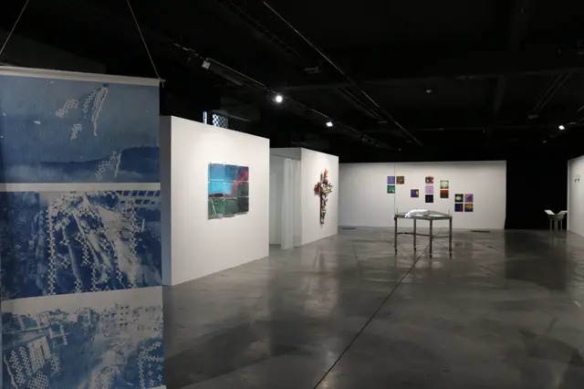

STARTER 10
2024 · La Condition Publique, Roubaix
- Conception de l'exposition.
- Communication : dossier de presse, communiqué de presse, gestion des réseaux sociaux.
- Montage de l'exposition.
- Médiation : accueil du public et visites.
- Œuvre exposée : Signum Cruci.

